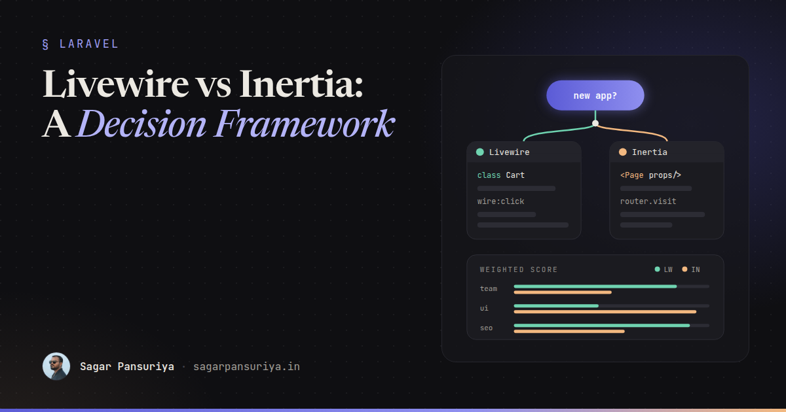
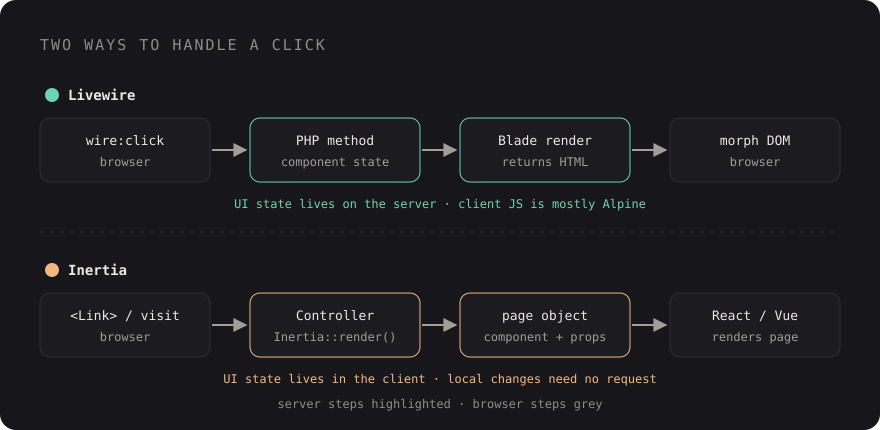

Livewire vs Inertia: A Tech Lead's Decision Framework


You've probably sat in this meeting. A new Laravel project is kicking off, the backend plan is clear, and then someone asks the question that eats the next forty minutes: "Livewire or Inertia?" Half the room has a strong opinion, the other half has a favourite YouTube video, and nobody has written down what the decision actually depends on.
Both are good. Both are first-class citizens in the Laravel ecosystem: the official starter kits ship with Livewire, React and Vue options, and plenty of serious products run on each. So the useful question isn't "which is better", it's "which is better for this team and this product". This post is the framework I use to answer that, including a scoring matrix you can fill in during that meeting and three scenarios with the pick I'd make.
The one-paragraph difference
With Livewire, your components are PHP classes with Blade views. The server renders HTML, and when the user interacts, Livewire sends a request, runs your PHP method, re-renders the component and morphs the DOM. You write very little JavaScript, and Alpine fills the gaps for purely client-side behaviour.
With Inertia, your controllers stay classic Laravel controllers, but instead of returning a Blade view they return a page component name and props. The client is a real React or Vue app that renders those pages, and Inertia handles routing and data loading between them without you building a separate API.

That difference, where the rendering happens and where UI state lives, drives almost every trade-off below.
The seven questions
1. What does the team already know?
This is the heaviest factor, and teams consistently underweight it. A team of strong Laravel developers with light JavaScript will ship faster and with fewer bugs in Livewire. A team that already writes React or Vue every day will feel constrained by Livewire and productive in Inertia. Rewriting your team's skills is far more expensive than picking the tool that fits them.
2. How interactive is the UI, really?
Be honest here. Most business apps are forms, tables, filters, modals and dashboards. Livewire handles all of that comfortably. The picture changes when the UI has lots of state that changes many times per second without needing the server: drag-and-drop canvases, rich editors, complex drawing or timeline tools, real-time collaborative views. Every Livewire interaction that needs the server is a network round trip; in React or Vue that same state change is local and instant. Alpine can carry a lot of client-side behaviour inside Livewire, but past a certain complexity you're building a JavaScript app with extra steps.
3. Do you need SEO and fast first paint?
Livewire is server-rendered by default. Search engines and link previews get real HTML without any extra setup. Inertia renders on the client unless you set up its server-side rendering mode, which means running a Node process alongside PHP in production. It works well, but it's another moving part to deploy and monitor. For public, content-heavy pages, Livewire (or plain Blade) has the simpler story.
4. Does anything need to work offline?
Neither is an offline framework. Livewire is essentially server-bound: no connection, no interactions. Inertia gives you a client-side app where you can keep state and add a service worker, but its navigation and data still come from the server. If genuine offline use is a hard requirement (field workers, spotty connections), you're usually looking at a proper SPA or PWA with an API and a local data store, or a native wrapper. Treat this question as a filter: if the answer is "yes, seriously", neither choice is the full answer.
5. Who will you hire next?
Think two years out. React developers are easy to find almost everywhere; Livewire experience is rarer, but any competent Laravel developer can learn it in days because it's mostly PHP and Blade. The real question is what shape your team will be. Full-stack PHP developers who own features end to end fit Livewire. A split between backend and dedicated frontend engineers fits Inertia, because it gives the frontend people a stack they already know and want on their CV.
6. How will you test it?
Livewire has a strong testing story in plain PHP. You can mount a component, set properties, call actions and assert on the result, all in Pest or PHPUnit:
it('adds a product to the cart', function () {
Livewire::test(AddToCart::class, ['product' => $this->product])
->call('add')
->assertSet('count', 1)
->assertDispatched('cart-updated');
});Inertia splits testing in two. On the Laravel side you assert on the page component and props that a controller returns:
use Inertia\Testing\AssertableInertia as Assert;
it('lists orders', function () {
$this->get('/orders')->assertInertia(fn (Assert $page) => $page
->component('Orders/Index')
->has('orders', 10)
);
});Component behaviour then gets tested in JavaScript with something like Vitest and Testing Library. That's more total tooling, but it's also the tooling your frontend developers already know. For end-to-end confidence, both work fine with browser tests.
7. What does year three look like?
Maintenance is where the differences compound. A Livewire app has one language, one set of dependencies that matter (Composer), and very little build complexity. An Inertia app has two ecosystems to keep up to date, and the npm side moves faster: React or Vue major versions, the component libraries you picked, the build tooling. In exchange, Inertia apps tend to have cleaner separation between data (controllers) and presentation (components), which helps when a large frontend grows.
The scoring matrix
Here's how I run it. Give each criterion a weight from 1 to 3 for this project, then score each option from 1 to 5. Multiply, add up, and discuss the result rather than obey it. The scores below are my general starting points; change them to fit your team.
| Criterion | Weight (1–3) | Livewire | Inertia | Notes |
|---|---|---|---|---|
| Fit with current team skills | ? | 5 for PHP teams | 5 for JS teams | Score for your actual team |
| Highly interactive, client-heavy UI | ? | 2 | 5 | Canvases, editors, real-time |
| Forms, tables, CRUD speed | ? | 5 | 4 | Livewire has less glue code |
| SEO and first paint, low ops | ? | 5 | 3 | Inertia SSR needs a Node process |
| Offline capability | ? | 1 | 2 | Neither is great; treat as a filter |
| Hiring pool | ? | 3 | 5 | Depends on your market |
| Testing in one language | ? | 5 | 3 | Inertia adds JS test tooling |
| Long-term maintenance cost | ? | 4 | 3 | One ecosystem vs two |
The matrix is less about the final number and more about forcing the room to agree on weights. Once everyone agrees that "fit with current team" is a 3 and "offline" is a 1, the decision usually makes itself.
Three scenarios
Scenario A: an internal operations dashboard
Picture a team of four Laravel developers building an operations tool for a logistics company: order management, reports, approval flows, a lot of filtered tables and forms. No public pages, a few hundred users, and the client wants features shipped every sprint.
Pick: Livewire. Team fit is a 3 and scores 5, interactivity needs are modest, testing stays in Pest, and there's no second ecosystem to maintain. Add Alpine for dropdowns and modals, and keep a small Alpine or plain JavaScript island for the one chart that needs it.
Scenario B: a SaaS product with a visual editor
Picture a startup building a product where the core feature is a drag-and-drop page builder, with undo and redo, live previews and keyboard shortcuts. The team has two Laravel developers and three frontend developers who've written React for years.
Pick: Inertia with React. The core UI is exactly the kind of fast-changing client state that punishes server round trips, the team already thinks in components and hooks, and the React ecosystem has mature libraries for drag and drop and editors. Inertia keeps the Laravel side simple: controllers, policies and validation work as usual, with no separate API to version.
Scenario C: a public marketplace with an account area
Picture a listings marketplace: thousands of public, SEO-critical listing and category pages, a search with filters, and a logged-in area for sellers to manage listings and messages. A mixed team, mostly PHP.
Pick: Livewire (and plain Blade for the public pages). SEO and first paint are weighted at 3, and server-rendered HTML wins that with no extra infrastructure. Filters become Livewire components with URL-bound properties, public pages stay cacheable Blade, and the seller area is classic forms and tables. If one feature later needs heavy client-side UI, a small React or Vue island mounted in that page is a reasonable exception, not a reason to switch the whole app.
A few things that aren't reasons
- "Livewire doesn't scale." The server work per interaction is a normal Laravel request. It scales like the rest of your app. Payload size and round-trip count are the things to watch, and they're design problems, not framework limits.
- "Inertia is basically an SPA, so it's heavier." The bundle cost is real but manageable with code splitting per page. It's rarely the deciding factor for business apps.
- "We might want a mobile app later." Neither choice gives you one for free. If a mobile app is on the roadmap, you'll want a clean API layer either way.
The checklist for that kickoff meeting
- Write down the team's real skills, not the skills you wish it had.
- List the three most interactive screens and ask whether each one needs the server on every change.
- Decide how much of the app is public and SEO-critical.
- Treat offline as a filter: if it's a hard requirement, plan for more than either tool.
- Picture your next two hires and what they'll be expected to own.
- Agree on weights in the matrix before anyone scores anything.
- Pick one as the default and allow small, deliberate islands of the other approach.
The worst outcome isn't picking the "wrong" one. Both will get you to production. The worst outcome is a decision nobody can explain six months later. Write down the weights and the reasoning in your README or an architecture decision record, and the next person to ask "why Livewire?" gets an answer instead of a debate.
Discussion